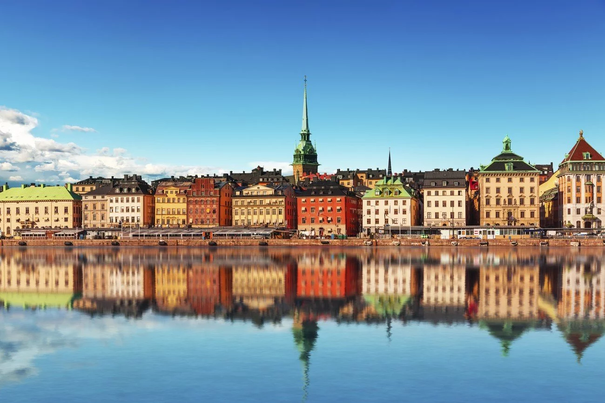

|

|
Stockholm, la belle capitale suédoise
Avec 1,25 million d’habitants, la capitale suédoise figure donc logiquement à la première place des plus grandes villes de Suède. Mais c’est aussi et surtout l’une des plus belles villes d’Europe. De part une architecture gothique et élancé, mais aussi grâce à sa localisation. En effet Stockholm est avant tout une ville portuaire qui a été construite à cheval sur plusieurs îles. Il en résulte une multitude de ponts, d’avenues et de perspectives à couper le souffle. Enfin la lumière est toujours assez spéciale à Stockholm, un peu comme dans toute la Scandinavie d’ailleurs.
|